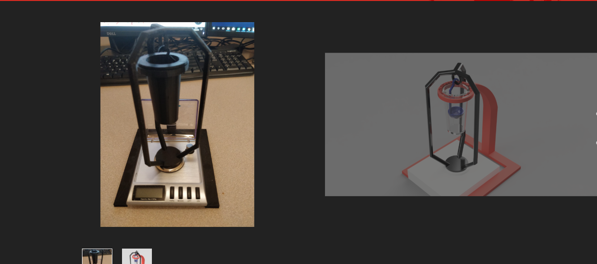
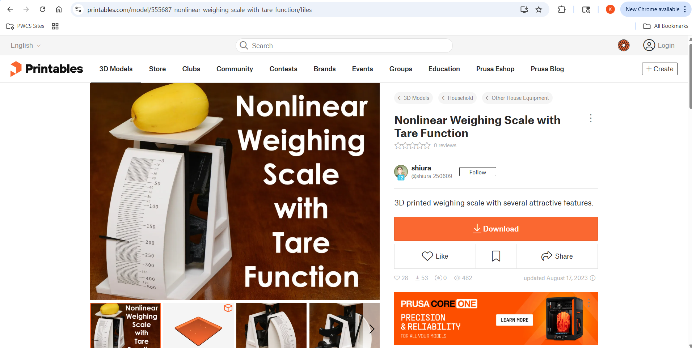
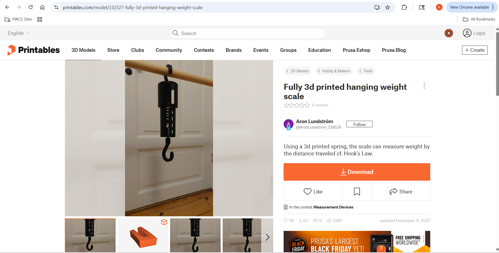
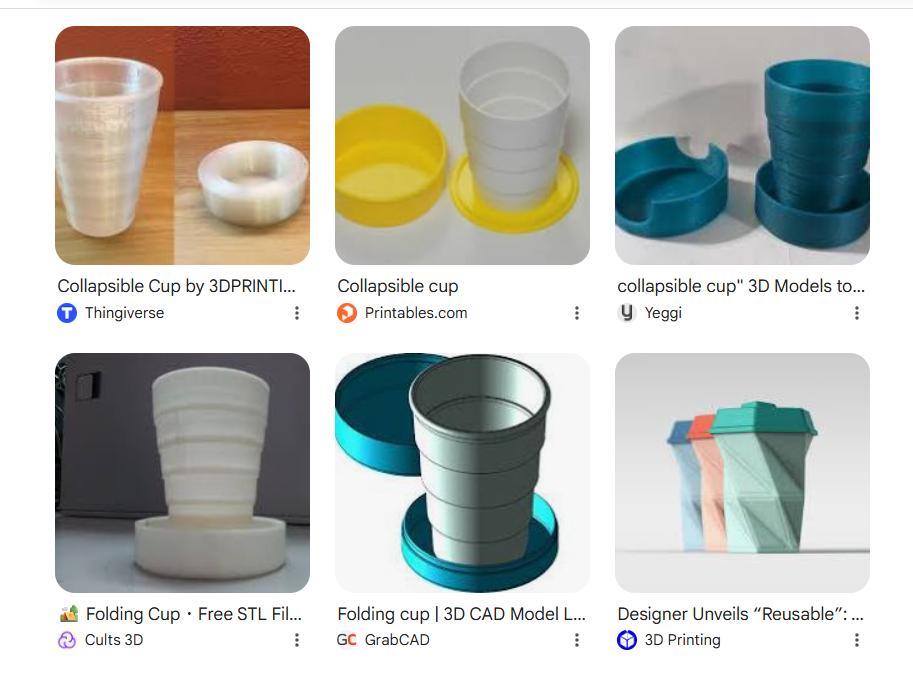

1. The ones currently available are way too expesive (most are over $100)
2. Many are much too large for me to comfortable taking them on a hike

1.be **FULLY** 3D-printable
2.be able to comforably fit into my hiking bag (nothing too big or bulky)
3.be able to measure rocks up to 100*100*100mm
Now, one of the (arguably) most important things to do when creating something new is to ensure that this does not already exist. Through research, all I was able to find were stands for specificic gravity that still needed a scale and seemed far too large for what I was going for.
1. 3D printer... I don't personally have one, so I'm hoping to use my school's, but i might have to use a friend's if not.
2. Making a fully functioning and accurate 3dprinted scale that will still be portable...yeah this might be a bit of a challenge if this doesn't already exist
3. Making this portable. I want this to fit into my usual hiking bag, which is already very small while being able to measure farly sizable rocks. I will likely have to create collapsable/foldable parts to make this work.
1. A scale to measure the weight of the stone both in liquid and in air
2. A way to connect the rock to the scale
3. A cup of sorts to hold water in
Now, I don't want to make anythng that i don't have to, so I first looked to see if a fully 3D printable scale tha fit my requirements already existed.There aren't many that don't require a screen, electronics, or further hardware, but a few caught my eye. First, I saw this non-linear scale that looks promising but seems a bit large for what i wanted.  Through a bit more searching (and so many only-partially printed scales that needed electrical parts), I was able to find this spring that uses Hooke's Law with springs to measure the mass of the object based on how much the spring stretched. This design seems both compact and effective.  Assuming that this scale design will be viable, it's time to look for cup designs. I'm thinking of making collapsable and exchangeable cups that allow the hook scale to attach and hold the rock in the cups with and without water. I know that 3d-printable collapsable cups already exist, so I'm going through models like these.  For the cup with water, it's important that there will be no holes whatsoever in the design, while the cup without water should be left with holes to allow water to properly drain. Below I've drawn a (very) rough draft for reference. --- Now it's time to move on to CAD and see if I can actually model this!! For this I used OnShape (my favorite).